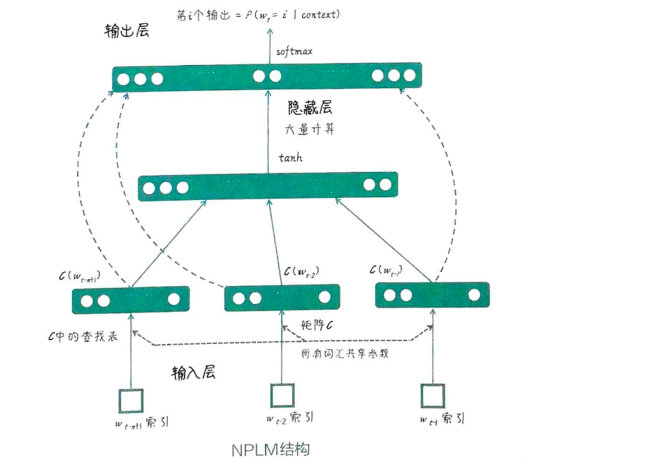
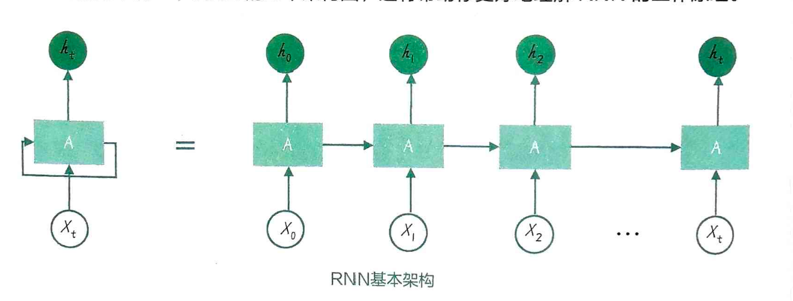
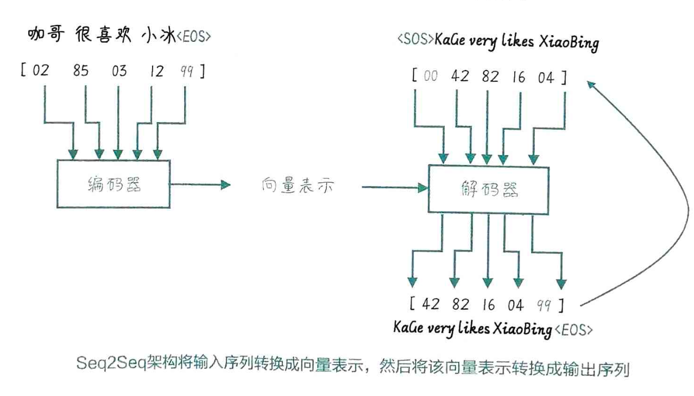
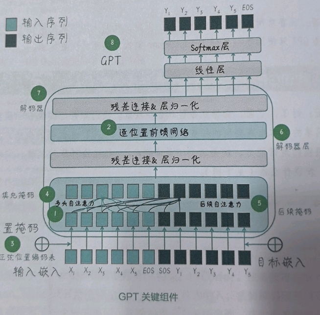

自然语言处理（Natural Language Processing）
Language is the source of all civilizations.
自然语言处理（NLP）旨在让计算机理解、生成和处理人类语言。
从早期的规则系统到如今的大语言模型（LLM），NLP 经历了从符号主义（Symbolism）到连接主义（Connectionism）的深刻范式转移。
技术演进范式
NLP 的发展史是从表示学习（Representation Learning）到建模能力（Modeling Capacity）不断升级的过程。
- 规则时代 (Rule-based): 依赖语言学家手工构建语法规则和词典。
- 特点: 高精度，低召回，无法泛化，维护成本极高。
- 代表: 早期专家系统。
- 统计时代 (Statistical NLP): 基于大规模语料库进行统计推断。
- 特点: 引入概率模型，泛化能力提升，但受限于特征工程（Feature Engineering）。
- 代表: n-gram, HMM, CRF, SVM。
- 深度学习时代 (Deep Learning): 自动特征提取，端到端（End-to-End）学习。
- 特点: 引入分布式表示（Word Embeddings），解决维数灾难；通过神经网络拟合复杂函数。
- 代表: Word2Vec, RNN, CNN, Seq2Seq。
- 大模型时代 (Foundation Models): “预训练 + 微调”范式。
- 特点: 自监督学习（Self-Supervised Learning），Scaling Laws 生效，涌现能力（Emergent Abilities）。
- 代表: Transformer, BERT, GPT, LLaMA。
核心技术发展历程
| 技术/模型 | 核心思想 | 解决的痛点 | 局限性/工程挑战 |
|---|---|---|---|
| n-gram/BOW | 词频统计，离散表示 | 数字化文本，简单高效 | 数据稀疏，维度灾难，忽略语序和语义相似性 |
| Word2Vec | 分布式表示，词向量 | 解决稀疏性，捕捉词汇语义关系 (King-Man+Woman=Queen) | 静态 Embedding，无法解决多义词问题 (Context-free) |
| RNN/LSTM | 循环结构，处理变长序列 | 捕捉序列依赖，引入时间维度 | 梯度消失/爆炸，无法并行训练 (时间复杂度 O(T)) |
| Seq2Seq | Encoder-Decoder 架构 | 解决输入输出长度不一致问题 (如翻译) | 信息瓶颈：固定长度 Context Vector 难以承载长序列信息 |
| Attention | 动态权重分配 | 打破固定长度瓶颈，直接关注相关信息 | 计算量随序列长度增长，早期仍依赖 RNN 结构 |
| Transformer | Self-Attention 全并行 | 彻底抛弃循环，实现并行计算，捕捉长距离依赖 | 显存占用大 (Attention Matrix \(O(N^2)\))，位置信息需额外编码 |
| BERT | 双向 Encoder，Masked LM | 深度双向语境理解，适合 NLU 任务 | 预训练与微调模式不一致 (Mask 标记)，不擅长生成任务 |
| GPT 系列 | 单向 Decoder，Next Token Prediction | 统一生成范式，Few-shot/Zero-shot 能力 | 早期版本容易产生幻觉，上下文窗口限制 |
1. 离散符号与统计模型 (The Era of Sparsity)
n-gram
基于马尔可夫假设（Markov Assumption），即当前词出现的概率仅取决于前 \(n-1\) 个词。
- 工程视角: 随着 \(n\) 增大，参数空间呈指数级爆炸，导致严重的数据稀疏问题。通常 \(n\) 取 2 或 3。
- n-gram 代码实现
词袋模型（Bag of Words, BOW）
忽略语序，仅考虑词频。将文本表示为高维稀疏向量（One-hot 组合）。
2. 词的分布式表示 (Word Embeddings)
这是 NLP 的第一个“黑魔法”时刻。通过将词映射到低维稠密向量空间（Dense Vector Space），使得语义相似的词在空间中距离更近。
{kind=link}
Word2Vec
Google 提出的高效训练词向量的方法。
- 核心假设: Distributional Hypothesis —— 词的含义由其上下文决定。
- 工程优化: 引入 Negative Sampling (负采样) 和 Hierarchical Softmax 替代全量的 Softmax，极大地降低了训练时的计算复杂度。
CBOW (Continuous Bag of Words)
用上下文预测中心词。适合小型语料库。 - cbow 代码实现
Skip-gram
用中心词预测上下文。在大型语料库表现更好，对生僻词更敏感。 - skip-gram 代码实现
{kind=link}
3. 序列建模与递归网络 (Sequence Modeling)
神经概率语言模型 (NPLM)
Bengio 早期提出的神经网络语言模型，虽然训练慢，但奠定了 Word Embedding + Neural Network 的基础。
- nplm 代码实现

{kind=link}
循环神经网络 (RNN)
通过引入隐藏状态（Hidden State） \(h_t = f(x_t, h_{t-1})\) 来传递历史信息。
- 痛点: 反向传播时存在梯度消失（Vanishing Gradient）问题，导致难以捕捉长距离依赖。
- 改进: LSTM 和 GRU 通过引入门控机制（Gating Mechanism）缓解了这一问题。
- rnn 代码实现

{kind=link}
4. 序列到序列与注意力机制 (Seq2Seq & Attention)
Seq2Seq (Encoder-Decoder)
将输入序列编码为固定长度向量，再解码为输出序列。
- seq2seq 代码实现

{kind=link}
Attention Mechanism (注意力机制)
Attention 的本质是加权求和。它允许 Decoder 在生成的每一步都能“看”到 Encoder 的所有隐藏状态，并根据相关性聚焦于特定区域。
- Q (Query): 当前解码状态
- K (Key): 编码器各时刻状态
- V (Value): 编码器各时刻内容
-
\(\sqrt{d_k}\): 缩放因子，防止点积过大导致 Softmax 进入饱和区（梯度消失）。
{kind=link}
{kind=link}
5. Transformer: 大模型的基石
Google 2017 年论文 Attention Is All You Need 彻底改变了 NLP。Transformer 抛弃了 RNN，完全依赖 Self-Attention。
- Self-Attention: 捕捉序列内部的依赖关系，实现 \(O(1)\) 的路径长度（RNN 是 \(O(T)\)）。
- Multi-Head Attention: 将 Embedding 拆分为多个头，让模型在不同的子空间（Subspaces）学习特征（如语法、语义、指代关系）。
- Positional Encoding: 由于 Attention 是置换不变的（Permutation Invariant），必须显式注入位置信息。
-
并行化: 训练时可以并行计算整个序列，极大地加速了大规模预训练。
{kind=link}
{kind=link}
6. 生成式 AI 与大语言模型 (LLM)
LLM 的核心不仅仅是模型变大，而是Scaling Laws（缩放定律）的验证：模型性能与参数量、数据量、计算量呈幂律关系。
GPT (Generative Pre-trained Transformer)
坚持使用 Decoder-only 架构，通过自回归（Autoregressive）目标进行无监督预训练。
-
演进路线:
- GPT-1: 验证了 Pre-train + Fine-tune 的有效性。
- GPT-2: Zero-shot 尝试，证明了模型在大规模数据下可以学会多任务。
- GPT-3: In-context Learning (ICL)，无需梯度更新即可通过 Prompt 引导模型完成任务。
- InstructGPT/ChatGPT: 引入 RLHF，解决对齐问题。
- 微调wiki-gpt成chatgpt

{kind=link}
文本生成策略
- Greedy Search: 局部最优，容易陷入重复循环。
- Beam Search: 维护 Top-K 路径，全局更优，但缺乏多样性。
- Temperature Sampling: 调整 Softmax 分布平滑度，控制生成的多样性与创造力。
- Top-k / Top-p (Nucleus) Sampling: 截断低概率尾部，防止生成离谱内容。
7. 对齐技术 (Alignment): 让 AI 更像人
单纯的 Next Token Prediction 训练出来的模型可能是有毒的、胡言乱语的。需要通过对齐技术使其符合人类价值观（Helpful, Honest, Harmless）。
SFT (Supervised Fine-Tuning)
指令微调 (Instruction Tuning)。使用高质量的 (Prompt, Response) 数据对预训练模型进行微调，教会模型“理解指令”而不仅仅是“续写文本”。
RLHF (Reinforcement Learning from Human Feedback)
基于人类反馈的强化学习，是 ChatGPT 的核心护城河。
- SFT 模型: 初始化策略。
- Reward Model (RM): 训练一个打分模型，拟合人类对回答优劣的偏好（Ranking Loss）。
- PPO (Proximal Policy Optimization): 使用强化学习算法优化生成模型，使其生成的回答能获得 RM 的高分，同时通过 KL Divergence 约束防止模型跑偏（Reward Hacking）。
{kind=link}
8. 工程前沿与落地挑战
作为研发，在落地 LLM 时需关注：
- RAG (Retrieval-Augmented Generation): 检索增强生成。解决 LLM 知识过期和幻觉问题。
- 架构: Query -> Embedding -> Vector DB Search -> Context + Query -> LLM。
- PEFT (Parameter-Efficient Fine-Tuning): 参数高效微调。
- LoRA (Low-Rank Adaptation): 冻结主干参数，仅训练低秩旁路矩阵，显存占用降低 90%。
- Agent (智能体): LLM 作为大脑，调用工具（Tools）、规划任务（Planning）、维护记忆（Memory）。
- Inference Optimization (推理优化):
- Quantization: INT8/INT4 量化 (GPTQ, AWQ)。
- FlashAttention: 硬件感知的 IO 优化，加速 Attention 计算。
- vLLM / PagedAttention: 优化 KV Cache 显存管理，提升吞吐量。
附录与推荐阅读
- The Illustrated Transformer (Jay Alammar) - 经典的图解 Transformer
- The Illustrated GPT-2 (Jay Alammar)
- State of GPT (Andrej Karpathy) - 必看的 GPT 现状综述